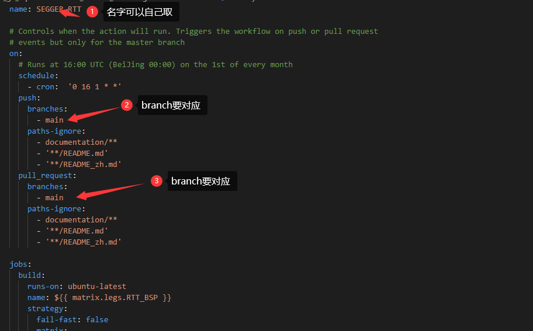
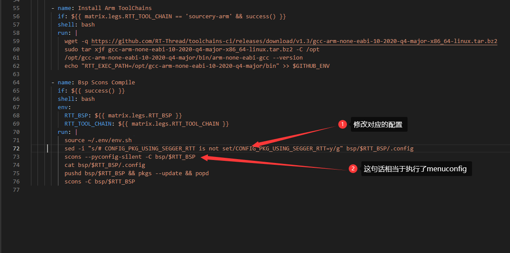
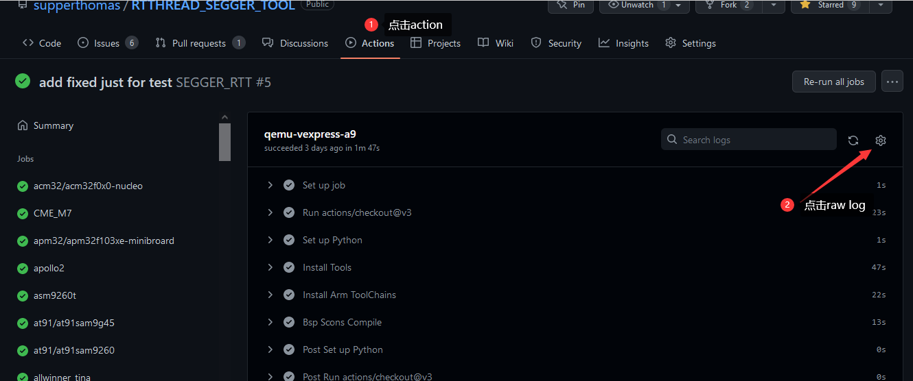

【github】【action】如何给软件包添加CI集成
简介
github有自己的CI集成工具 action, 很少有小伙伴关注到，如果你有自己的软件包，想要对其进行维护的话，添加CI集成能够方便你快速验证你的代码是否在RTT上可以顺利编译。
下面的链接是github action的帮助文档：
https://docs.github.com/cn/actions/automating-builds-and-tests/about-continuous-integration
本文会大概指导一下大家，如何在自己软件包上添加CI集成工具，由于每个软件包的配置都不相同，要根据下面的步骤，灵活的配置你自己的软件包。
添加CI 大概有以下作用：
可以验证你的软件包在不同的bsp下面的编译情况，可以告诉用户bsp是可以用你的软件包的。
在RTTHREAD升级的时候，可以通过触发CI来告诉作者，该软件包编译是否有问题。
可以学习如何自行部署action和调试action。
也可以间接的告诉作者如何使用你的软件包
背景
在我们PR的时候，经常会遇到CI不通过的情况，其实是RT-THREAD仓库里面的action 下面链接的文件起作用
https://github.com/RT-Thread/rt-thread/blob/master/.github/workflows/action.yml
受这个启发，我们把它整合到我们自己的软件包仓库下面。下面以我的仓库的软件包举例
https://github.com/supperthomas/RTTHREAD_SEGGER_TOOL
欢迎star
步骤
第一步 下载软件包
先把你的软件包下载下来
git clone git@github.com:supperthomas/RTTHREAD_SEGGER_TOOL.git
然后git branch 看下当前的分支是main 还是master 这个后面需要用到，我这里是main
然后新建一个分支，自己起任意名字，因为我们要发起PR到自己仓库，所以不能像以前一样直接PR到main分支
git checkout -b ci_test
第二步 添加action.yml
这里给大家提供一个模板，可以先尝试添加如下的模板在仓库的.github 文件夹下面新建一个workflows文件夹，下面添加action.yml。
name: SEGGER_RTT
# Controls when the action will run. Triggers the workflow on push or pull request
# events but only for the master branch
on:
# Runs at 16:00 UTC (BeiJing 00:00) on the 1st of every month
schedule:
- cron: '0 16 1 * *'
push:
branches:
- main
paths-ignore:
- documentation/**
- '**/README.md'
- '**/README_zh.md'
pull_request:
branches:
- main
paths-ignore:
- documentation/**
- '**/README.md'
- '**/README_zh.md'
jobs:
build:
runs-on: ubuntu-latest
name: ${{ matrix.legs.RTT_BSP }}
strategy:
fail-fast: false
matrix:
legs:
- {RTT_BSP: "qemu-vexpress-a9", RTT_TOOL_CHAIN: "sourcery-arm"}
steps:
- uses: actions/checkout@v3
with:
repository: RT-Thread/rt-thread
- name: Set up Python
uses: actions/setup-python@v3
with:
python-version: 3.8
- name: Install Tools
shell: bash
run: |
sudo apt-get update
sudo apt-get -qq install gcc-multilib libsdl-dev libncurses5-dev scons
sudo python -m pip install --upgrade pip -qq
pip install requests -qq
git config --global http.postBuffer 524288000
python -c "import tools.menuconfig; tools.menuconfig.touch_env()"
echo "RTT_ROOT=${{ github.workspace }}" >> $GITHUB_ENV
echo "RTT_CC=gcc" >> $GITHUB_ENV
- name: Install Arm ToolChains
if: ${{ matrix.legs.RTT_TOOL_CHAIN == 'sourcery-arm' && success() }}
shell: bash
run: |
wget -q https://github.com/RT-Thread/toolchains-ci/releases/download/v1.3/gcc-arm-none-eabi-10-2020-q4-major-x86_64-linux.tar.bz2
sudo tar xjf gcc-arm-none-eabi-10-2020-q4-major-x86_64-linux.tar.bz2 -C /opt
/opt/gcc-arm-none-eabi-10-2020-q4-major/bin/arm-none-eabi-gcc --version
echo "RTT_EXEC_PATH=/opt/gcc-arm-none-eabi-10-2020-q4-major/bin" >> $GITHUB_ENV
- name: Bsp Scons Compile
if: ${{ success() }}
shell: bash
env:
RTT_BSP: ${{ matrix.legs.RTT_BSP }}
RTT_TOOL_CHAIN: ${{ matrix.legs.RTT_TOOL_CHAIN }}
run: |
source ~/.env/env.sh
sed -i "s/# CONFIG_PKG_USING_SEGGER_RTT is not set/CONFIG_PKG_USING_SEGGER_RTT=y/g" bsp/$RTT_BSP/.config
scons --pyconfig-silent -C bsp/$RTT_BSP
cat bsp/$RTT_BSP/.config
pushd bsp/$RTT_BSP && pkgs --update && popd
scons -C bsp/$RTT_BSP
这个模板只保留了qemu，第一次先测一下qemu，后面再添加其他的action，可以直接参考rt-thread里面的放置。
新建完了之后需要根据你自己的软件包做如下修改：
修改一：branch要对应main或者master

修改二： .config要做对应修改
.config需要做对应的修改，首先要知道你的软件包要打开哪些配置，首先整个软件包有个大的宏，例如我的软件包就是CONFIG_PKG_USING_SEGGER_RTT 打开.config可以找到这个宏
用sed命令替换.config中的配置
从# CONFIG_PKG_USING_SEGGER_RTT is not set 替换为CONFIG_PKG_USING_SEGGER_RTT=y
sed -i "s/# CONFIG_PKG_USING_SEGGER_RTT is not set/CONFIG_PKG_USING_SEGGER_RTT=y/g" bsp/$RTT_BSP/.config
这个你可以通过menuconfig配置之后，查看git diff 查看。
这个修改之后就可以使能软件包了
后面那句话
scons --pyconfig-silent -C bsp/$RTT_BSP
相当于执行了menuconfig。

如果要修改其他配置的话，请在scons --pyconfig-silent -C bsp/$RTT_BSP 这个语句后面执行，因为有些配置只有在使能软件包之后才会有.config
最后一定要记得执行scons --pyconfig-silent -C bsp/$RTT_BSP 相当于保存配置。
到这里action.yml 已经修改好了，
第三步 PR测试
接下来就要提交你的PR了
git push origin ci_test
提交分支之后，点击PR按钮
执行PR，就可以看到对应的CI 开始跑了。
这个时候如果出现问题，需要点击下图中的raw log 查看

这里我通过命令cat bsp/$RTT_BSP/.config
将对应的.config 打印出来 你只要检查下.config内容和你用menuconfig内容有什么差异即可。
第四步 添加其他bsp
qemu添加ok之后，你就可以根据rt-thread中的action
https://github.com/RT-Thread/rt-thread/blob/master/.github/workflows/action.yml
中的bsp列表，添加所有的bsp了。
可能会遇到的问题，需要挑选对应的bsp：
可能有些
bsp的芯片ROM太小了, 你的软件包编译之后 代码越界了。可能有些bsp的架构不适合你的软件包，比如我的SEGGER_RTT 就是只需要适配ARM相关的bsp即可。
欢迎大家提建议或者尝试在自己的软件包中添加CI集成。